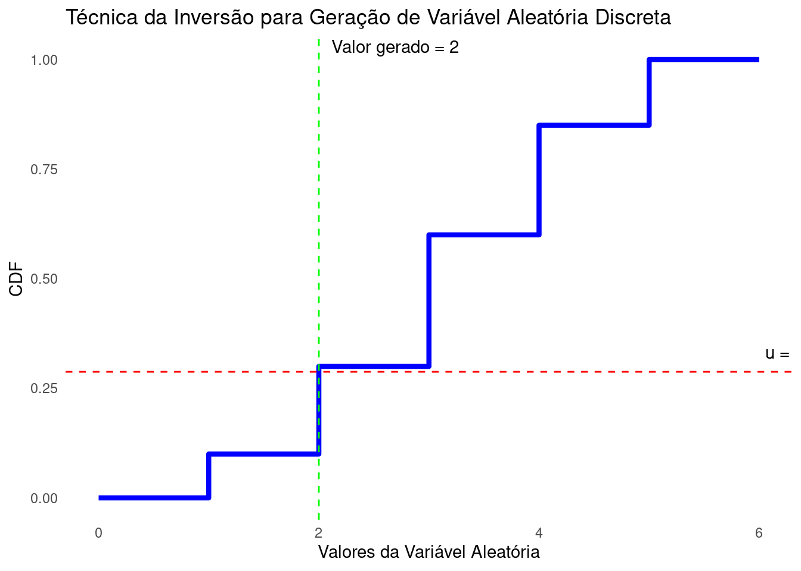
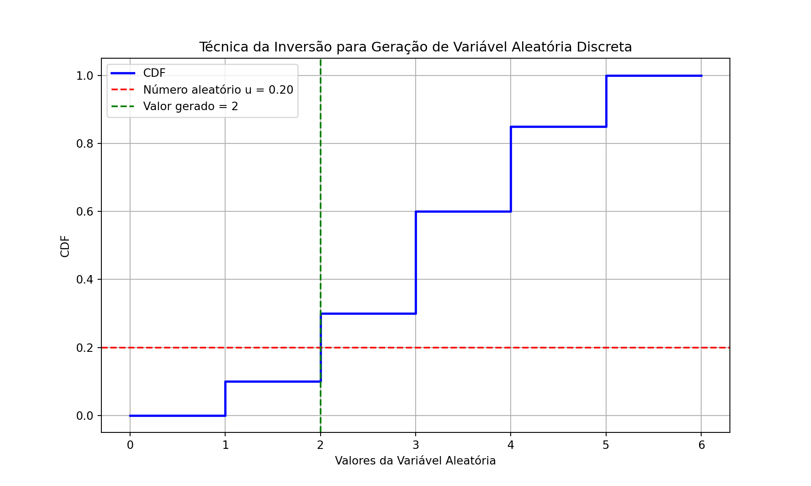
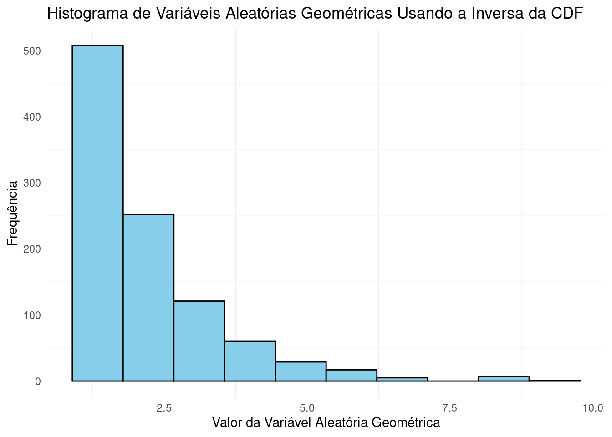
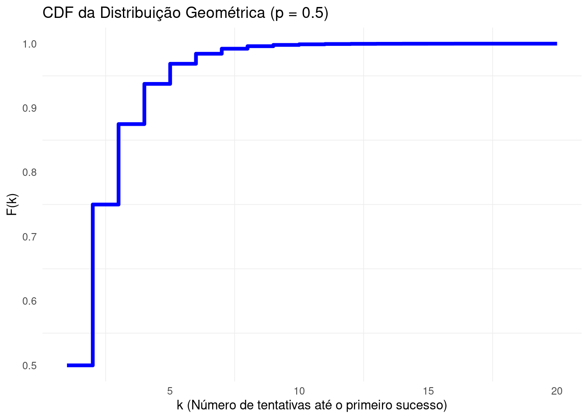
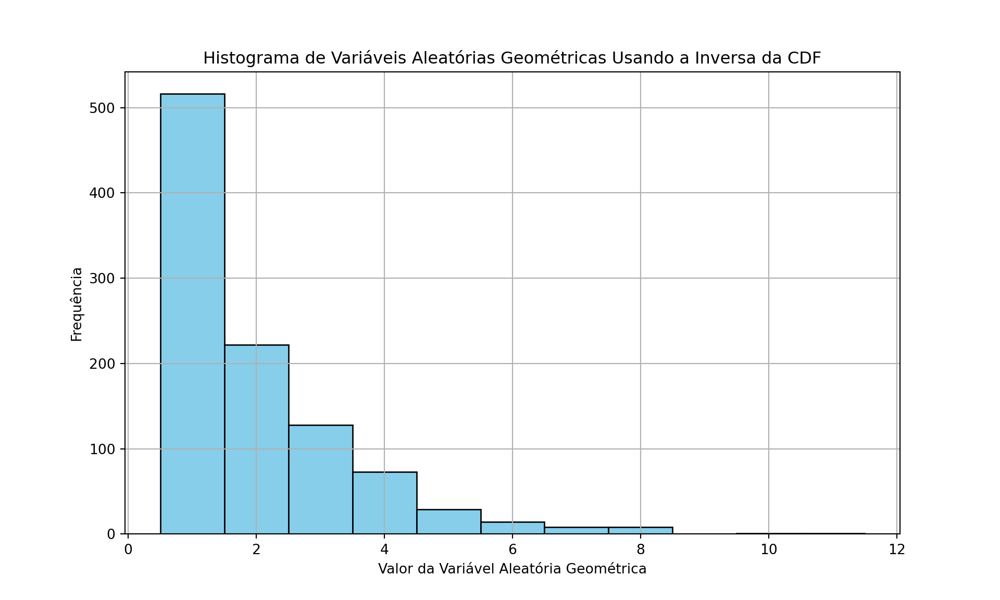
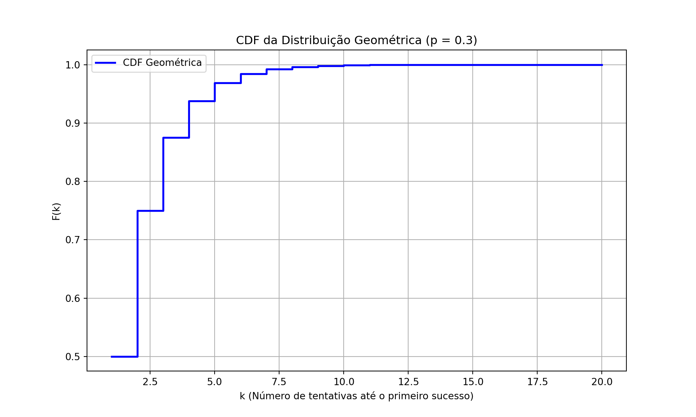
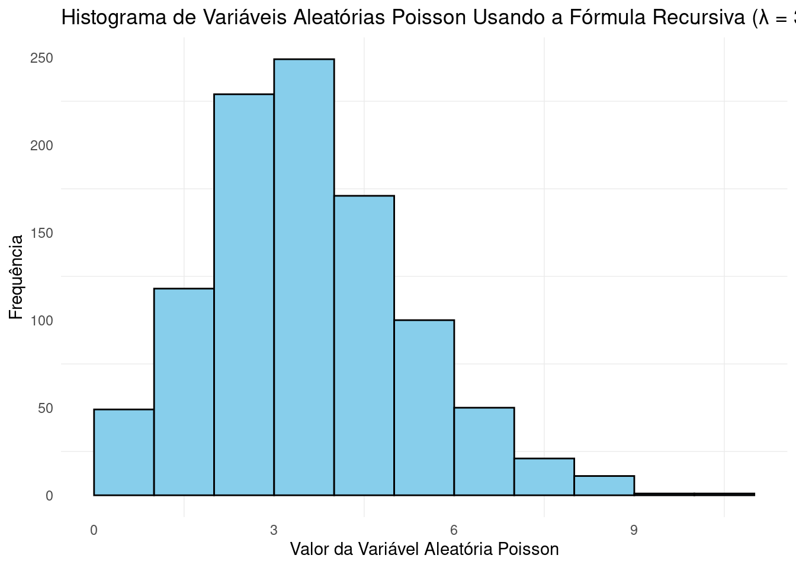
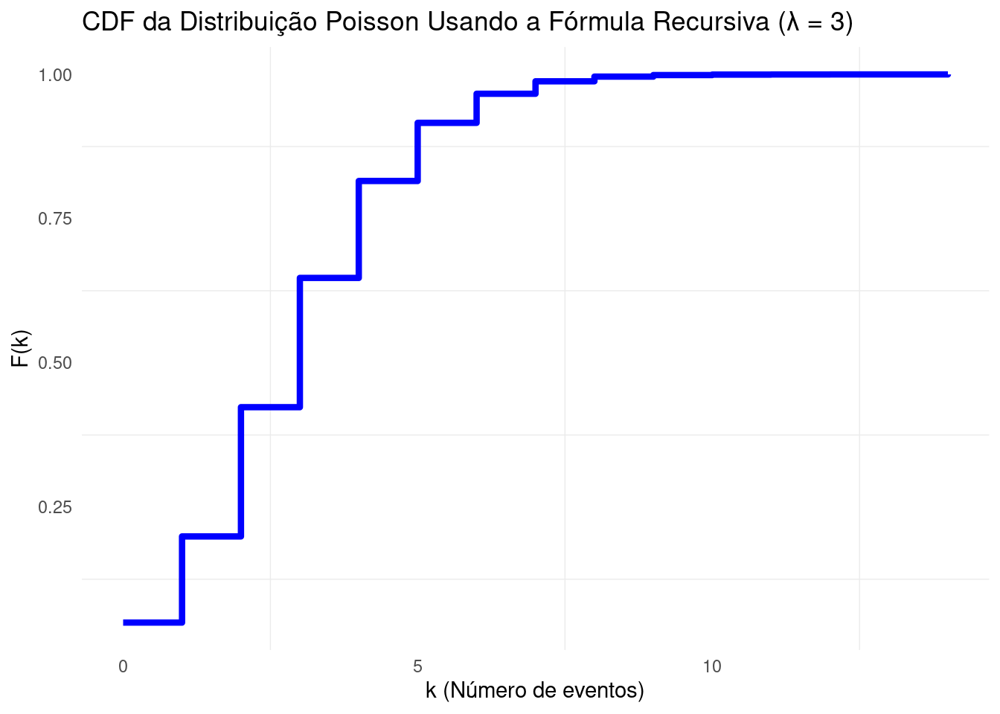
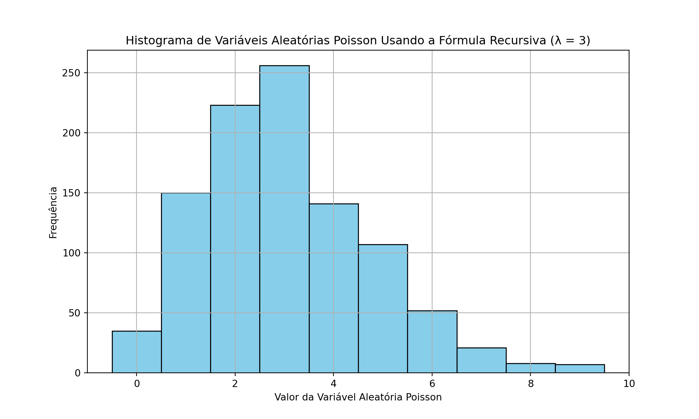
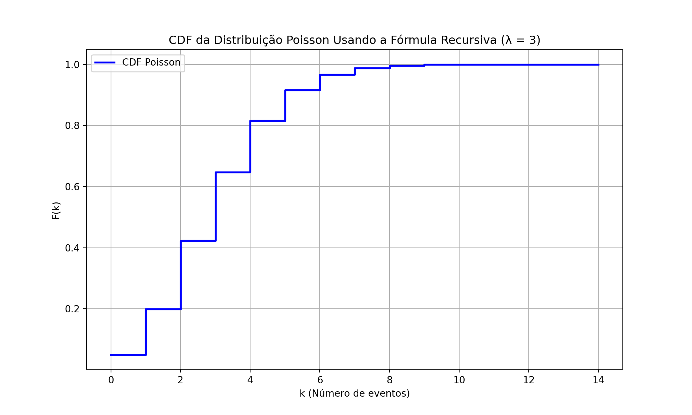

A técnica da inversão é uma maneira poderosa de gerar variáveis aleatórias (v.a.) a partir de uma distribuição arbitrária, usando números aleatórios uniformes no intervalo \([0, 1)\). A ideia básica é usar a função de distribuição acumulada (CDF) para mapear um número uniforme gerado entre 0 e 1 para o valor correspondente da v.a. discreta.
Passos Gerais para Gerar Variáveis Aleatórias Discretas com a Técnica da Inversão:
Calcular a CDF da variável aleatória que se deseja gerar.
Gerar um número aleatório uniforme\(u \in [0, 1)\).
Encontrar o valor da variável aleatória cuja CDF seja maior ou igual a \(u\).
Retornar esse valor como a variável aleatória gerada.
A seguir, veremos esse procedimento em detalhes.
5.1 Inversa da CDF
O método da inversão recebe esse nome pois seu algoritmo também pode ser caracterizado pela função inversa da CDF. A inversa da CDF (função de distribuição acumulada), também conhecida como a função quantil ou função percentil, é definida da seguinte forma:
Definição: Seja \(F(x)\) a função de distribuição acumulada (CDF) de uma variável aleatória \(X\). A inversa da CDF, denotada por \(F^{-1}(p)\), é definida como:
\[
F^{-1}(p) = \inf \{ x \in \mathbb{R} : F(x) \geq p \}, \quad \text{para } p \in [0, 1]
\]
Em palavras: - A inversa da CDF \(F^{-1}(p)\) mapeia um número \(p\), que representa uma probabilidade acumulada, de volta ao valor \(x\) correspondente da variável aleatória \(X\), tal que a probabilidade acumulada até \(x\) é igual a \(p\). - Isso significa que, se \(p = F(x)\), então \(F^{-1}(p) = x\).
Assim, o menor valor \(x_i\) tal que \(F(x_i) \geq u\) é justamente \(F^{-1}(u)\), de modo que o algoritmo pode ser escrito como
Gerar um número aleatório \(u \in [0, 1)\).
Retornar \(F^{-1}(u)\).
5.2 Geração de Variáveis Aleatórias Discretas Genéricas
Considere uma v.a. discreta \(X\) que assume valores em em \(x_1,x_2,\ldots\). Dadas as probabilidades de cada um desses valores \(p(x_i)\), a CDF \(F(x)\) é definida como:
\[
F(x_i) = \sum_{j=1}^{i} p(x_j)
\]
O algoritmo da inversão para gerar uma variável aleatória discreta genérica é:
Gerar um número aleatório \(u \in [0, 1)\).
Encontrar o menor valor \(x_i\) tal que \(F(x_i) \geq u\).
# Exemplo de valores e probabilidades de uma variável aleatória discretavalores <-c(0, 1, 2, 3, 4, 5, 6)probabilidades <-c(0, 0.1, 0.2, 0.3, 0.25, 0.15, 0) # Calculando a CDFcdf <-cumsum(probabilidades)# Gerando um número aleatório uniformeu <-runif(1)# Encontrando o valor correspondente na CDFvalor_gerado <-NAfor (i inseq_along(valores)) {if (u < cdf[i]) { valor_gerado <- valores[i]break }}# Ajustando o gráfico para corrigir a visualização da CDF e garantir que os valores estejam corretamente posicionadoslibrary(ggplot2)# Criando um dataframe para os valores e CDFdf <-data.frame(valores = valores, cdf = cdf)# Gráfico da CDF com número aleatório e valor geradoggplot(df, aes(x = valores, y = cdf)) +geom_step(direction ="hv", color ="blue", size =1.5) +geom_hline(yintercept = u, color ="red", linetype ="dashed") +geom_vline(xintercept = valor_gerado, color ="green", linetype ="dashed") +labs(title ="Técnica da Inversão para Geração de Variável Aleatória Discreta",x ="Valores da Variável Aleatória", y ="CDF") +annotate("text", x =max(valores), y = u, label =sprintf("u = %.2f", u), hjust =-0.1, vjust =-1) +annotate("text", x = valor_gerado, y =max(cdf), label =paste("Valor gerado =", valor_gerado), hjust =-0.1, vjust =-0.5) +theme_minimal() +theme(panel.grid =element_blank())

Mostrar código
import numpy as npimport matplotlib.pyplot as plt# Exemplo de valores e probabilidades de uma variável aleatória discretavalores = [0, 1, 2, 3, 4, 5, 6]probabilidades = [0, 0.1, 0.2, 0.3, 0.25, 0.15, 0]# Calculando a CDFcdf = np.cumsum(probabilidades)# Gerando um número aleatório uniformeu = np.random.uniform(0, 1)# Encontre o valor correspondente na CDFvalor_gerado =Nonefor i, valor inenumerate(valores):if u < cdf[i]: valor_gerado = valorbreak# Ajustando o gráfico para corrigir a visualização da CDF e garantir que os valores estejam corretamente posicionadosplt.figure(figsize=(10, 6))# Ajustando o eixo x para que a CDF comece e termine corretamenteplt.step(valores, cdf, label='CDF', color='blue', linewidth=2, where='post')plt.axhline(y=u, color='red', linestyle='--', label=f'Número aleatório u = {u:.2f}')plt.axvline(x=valor_gerado, color='green', linestyle='--', label=f'Valor gerado = {valor_gerado}')plt.title('Técnica da Inversão para Geração de Variável Aleatória Discreta')plt.xlabel('Valores da Variável Aleatória')plt.ylabel('CDF')plt.legend()plt.grid(True)plt.show()

5.3 Exemplo 1: Geração de Variáveis Aleatórias com Distribuição Geométrica
A distribuição geométrica modela o número de tentativas até o primeiro sucesso em uma sequência de experimentos de Bernoulli. Se a probabilidade de sucesso em cada tentativa é \(p\), a PMF é dada por: \[
P(X = k) = (1 - p)^{k-1} p \quad \text{para} \quad k = 1, 2, 3 \dots
\] onde \(k\) representa o número de falhas antes do primeiro sucesso.
Vamos agora obter a fórmula da inversa da CDF para a distribuição geométrica foi obtida a partir da função de distribuição acumulada (CDF) da distribuição geométrica:
\[
\begin{aligned}
F(k) & = \mathbb{P}(X \leq k) = \sum_{x=1}^{k}(1 - p)^{x-1}p \\
&= \frac{p}{1 - p} \sum_{x=1}^{k} (1 - p)^x\\
& = \frac{p}{1 - p} \cdot \frac{(1 - p)(1 - (1 - p)^k)}{p}\\
&= 1 - (1 - p)^k.
\end{aligned}
\] Queremos encontrar a inversa da CDF, ou seja, a fórmula que, dado um valor \(u\) entre 0 e 1, nos permita calcular o valor \(k\) tal que \(F(k) = u\).
Sabemos que:
\[
u = F(k) = 1 - (1 - p)^k
\]
Nosso objetivo é resolver essa equação para \(k\). Vamos fazer isso passo a passo.
Começamos isolando o termo \((1 - p)^k\):
\[
u = 1 - (1 - p)^k
\]
Subtraindo 1 de ambos os lados:
\[
u - 1 = - (1 - p)^k
\]
Multiplicando ambos os lados por \(-1\):
\[
1 - u = (1 - p)^k
\]
Agora aplicamos o logaritmo natural (log base \(e\)) em ambos os lados para resolver \(k\):
\[
\log(1 - u) = \log((1 - p)^k)
\]
Usando a propriedade dos logaritmos que permite trazer o expoente \(k\) para frente:
\[
\log(1 - u) = k \cdot \log(1 - p)
\]
Agora, isolamos \(k\):
\[
k = \frac{\log(1 - u)}{\log(1 - p)}
\]
Como \(k\) precisa ser um número inteiro (já que a distribuição geométrica conta o número de tentativas), usamos a função de arredondamento “para baixo” (\(\lfloor \cdot \rfloor\)), conhecida como a função piso:
# Função para gerar a inversa da CDF para a distribuição geométricainversa_cdf_geometrica <-function(p, u) {# Usando a fórmula inversa da CDF geométrica: F⁻¹(u) = floor(log(1 - u) / log(1 - p)) k <-floor(log(1- u) /log(1- p))return(as.integer(k))}# Parâmetro p da distribuição geométricap <-0.5# Gerando 1000 números uniformemente distribuídosuniformes <-runif(1000)# Gerando a variável aleatória geométrica correspondente para cada número uniformegeometricas <-sapply(uniformes, inversa_cdf_geometrica, p = p)# Plotando um histograma das variáveis geométricas geradaslibrary(ggplot2)df <-data.frame(geometricas = geometricas)ggplot(df, aes(x = geometricas)) +geom_histogram(bins =max(geometricas) +1, color ="black", fill ="skyblue", boundary =0, closed ="left") +labs(title ="Histograma de Variáveis Aleatórias Geométricas Usando a Inversa da CDF",x ="Valor da Variável Aleatória Geométrica", y ="Frequência") +theme_minimal() +theme(panel.grid.major =element_blank())

Mostrar código
# Função para calcular a CDF da distribuição geométricacdf_geometrica <-function(k, p) {return(1- (1- p)^k)}# Gerando valores de k para plotar a CDFk_values <-1:20cdf_values <-sapply(k_values, cdf_geometrica, p = p)# Plotando a CDF da distribuição geométricadf_cdf <-data.frame(k_values = k_values, cdf_values = cdf_values)ggplot(df_cdf, aes(x = k_values, y = cdf_values)) +geom_step(direction ="hv", color ="blue", size =1.5) +labs(title ="CDF da Distribuição Geométrica (p = 0.5)",x ="k (Número de tentativas até o primeiro sucesso)", y ="F(k)") +theme_minimal() +theme(panel.grid.major =element_blank())

Mostrar código
import numpy as npimport matplotlib.pyplot as plt# Função para gerar a inversa da CDF para a distribuição geométricadef inversa_cdf_geometrica(p, u):# Usando a fórmula inversa da CDF geométrica: F⁻¹(u) = ceil(log(1 - u) / log(1 - p)) k = np.ceil(np.log(1- u) / np.log(1- p))returnint(k)# Parâmetro p da distribuição geométricap =0.5# Gerando 100 números uniformemente distribuídosuniformes = np.random.uniform(0, 1, 1000)# Gerando a variável aleatória geométrica correspondente para cada número uniformegeometricas = [inversa_cdf_geometrica(p, u) for u in uniformes]# Plotando um histograma das variáveis geométricas geradasplt.figure(figsize=(10, 6))plt.hist(geometricas, bins=range(1, max(geometricas) +1), color='skyblue', edgecolor='black', align='left')plt.title('Histograma de Variáveis Aleatórias Geométricas Usando a Inversa da CDF')plt.xlabel('Valor da Variável Aleatória Geométrica')plt.ylabel('Frequência')plt.grid(True)plt.show()

Mostrar código
# Calculando a CDF para a distribuição geométricadef cdf_geometrica(k, p):return1- (1- p)**k# Gerando valores de k para plotar a CDFk_values = np.arange(1, 21)cdf_values = [cdf_geometrica(k, p) for k in k_values]# Plotando a CDF da distribuição geométricaplt.figure(figsize=(10, 6))plt.step(k_values, cdf_values, where='post', color='blue', label='CDF Geométrica', linewidth=2)plt.title('CDF da Distribuição Geométrica (p = 0.3)')plt.xlabel('k (Número de tentativas até o primeiro sucesso)')plt.ylabel('F(k)')plt.grid(True)plt.legend()plt.show()

5.4 Exemplo 2: Geração de Variáveis Aleatórias com Distribuição Poisson
A distribuição de Poisson é usada para modelar o número de eventos que ocorrem em um intervalo de tempo ou espaço fixo, onde os eventos ocorrem com uma taxa constante \(\lambda\) e de forma independente.
A função de probabilidade de massa (PMF) da distribuição de Poisson é dada por:
A distribuição de Poisson tem uma fórmula recursiva que pode ser usada para calcular as probabilidades de forma mais eficiente. Em vez de recalcular a probabilidade \(P(X = k)\) a cada vez, podemos usar a seguinte relação recursiva:
Essa relação recursiva permite gerar variáveis aleatórias de Poisson sem precisar calcular fatoriais repetidamente, o que é mais eficiente para grandes valores de \(\lambda\) ou grandes números de eventos \(k\).
5.4.1 Técnica da Inversão Usando a Fórmula Recursiva
Para gerar uma variável aleatória de Poisson usando a técnica da inversão e a fórmula recursiva, o processo é o seguinte:
Seja \(U \sim \text{Unif}(0,1)\)
Faça \(i = 0\), \(p = e^{-\lambda}\) e \(F = p\)
Se \(U < F\), faça \(X = i\) e pare.
Senão, atualize \(p = \frac{\lambda p}{i + 1}\), \(F = F + p\) e \(i = i + 1\)
# Função para gerar a inversa da CDF para a distribuição Poisson usando a técnica de inversão e a fórmula recursivainversa_cdf_poisson_recursiva <-function(lam, u) { k <-0 p <-exp(-lam) # P(X=0) F_acm <- p # Iniciamos com a probabilidade P(X=0)# Continuamos somando até que F >= uwhile (u > F_acm) { k <- k +1 p <- p * lam / k # Atualiza a probabilidade recursivamente para o próximo valor F_acm <- F_acm + p }return(k)}# Parâmetro lambda da distribuição Poissonlam <-3# Gerando 1000 números uniformemente distribuídosuniformes <-runif(1000)# Gerando a variável aleatória Poisson correspondente para cada número uniformepoisson_vars <-sapply(uniformes, inversa_cdf_poisson_recursiva, lam = lam)# Plotando o histograma das variáveis Poisson geradaslibrary(ggplot2)df <-data.frame(poisson_vars = poisson_vars)ggplot(df, aes(x = poisson_vars)) +geom_histogram(bins =max(poisson_vars) +1, color ="black", fill ="skyblue", boundary =0, closed ="left") +labs(title ="Histograma de Variáveis Aleatórias Poisson Usando a Fórmula Recursiva (λ = 3)",x ="Valor da Variável Aleatória Poisson", y ="Frequência") +theme_minimal() +theme(panel.grid.major =element_blank())

Mostrar código
# Função para calcular a CDF da distribuição Poissoncdf_poisson <-function(k, lam) { cdf <-0 p <-exp(-lam) # P(X=0)for (i in0:k) { cdf <- cdf + p # Adiciona a probabilidade à CDFif (i < k) { p <- p * lam / (i +1) # Atualiza a probabilidade recursivamente } }return(cdf)}# Gerando valores de k para a CDFk_values <-0:14cdf_values <-sapply(k_values, cdf_poisson, lam = lam)# Plotando a CDF da distribuição Poissondf_cdf <-data.frame(k_values = k_values, cdf_values = cdf_values)ggplot(df_cdf, aes(x = k_values, y = cdf_values)) +geom_step(direction ="hv", color ="blue", size =1.5) +labs(title ="CDF da Distribuição Poisson Usando a Fórmula Recursiva (λ = 3)",x ="k (Número de eventos)", y ="F(k)") +theme_minimal() +theme(panel.grid.major =element_blank())

Mostrar código
import numpy as npimport matplotlib.pyplot as pltimport math# Função para gerar a inversa da CDF para a distribuição Poisson usando a técnica de inversão e a fórmula recursivadef inversa_cdf_poisson_recursiva(lam, u): k =0 p = math.exp(-lam) # P(X=0) F = p # Iniciamos com a probabilidade P(X=0)# Continuamos somando até que F >= uwhile u > F: k +=1 p = p * lam / k # Atualiza a probabilidade recursivamente para o próximo valor F += preturn k# Parâmetro lambda da distribuição Poissonlam =3# Gerando 1000 números uniformemente distribuídosuniformes = np.random.uniform(0, 1, 1000)# Gerando a variável aleatória Poisson correspondente para cada número uniformepoisson_vars = [inversa_cdf_poisson_recursiva(lam, u) for u in uniformes]# Plotando o histograma das variáveis Poisson geradasplt.figure(figsize=(10, 6))plt.hist(poisson_vars, bins=range(0, max(poisson_vars) +1), color='skyblue', edgecolor='black', align='left')plt.title('Histograma de Variáveis Aleatórias Poisson Usando a Fórmula Recursiva (λ = 3)')plt.xlabel('Valor da Variável Aleatória Poisson')plt.ylabel('Frequência')plt.grid(True)plt.show()

Mostrar código
# Calculando a CDF da distribuição Poissondef cdf_poisson(k, lam): cdf =0 p = math.exp(-lam) # P(X=0)for i inrange(k+1): cdf += p # Adiciona a probabilidade à CDFif i < k: # Atualiza a probabilidade recursivamente p = p * lam / (i +1)return cdf# Gerando valores de k para a CDFk_values = np.arange(0, 15)cdf_values = [cdf_poisson(k, lam) for k in k_values]# Plotando a CDF da distribuição Poissonplt.figure(figsize=(10, 6))plt.step(k_values, cdf_values, where='post', color='blue', label='CDF Poisson', linewidth=2)plt.title('CDF da Distribuição Poisson Usando a Fórmula Recursiva (λ = 3)')plt.xlabel('k (Número de eventos)')plt.ylabel('F(k)')plt.grid(True)plt.legend()plt.show()

5.5 Exercícios
Exercício 1. Seja \(X\) uma v.a. tal que \(\mathbb P(X=1)=0.3,\mathbb P(X=3)=0.1\) e \(\mathbb P(X=4)=0.6\).
Escreva um pseudo-algoritmo para gerar um valor de \(X\).
Implemente uma função para gerar \(n\) valores de \(X\).
Compare a distribuição das frequências obtidas na amostra simulada com as probabilidades reais.
Implemente um algoritmo para gerar uma amostra de tamanho \(n\) da distribuição mistura de uma Poisson e de uma Geométrica com base nas funções implementadas nos exemplos (2) e (3).